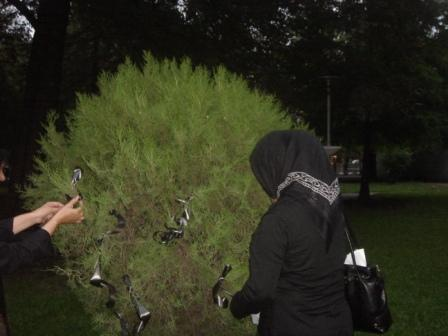

|
|
تجمع مادران عزادار در رشت
يكشنبه25 مرداد 1388
مادران عزادار در رشت این هفته نیز همگام با مادران عزادار تهران در یکی از پارک های رشت، با نماد های عزاداری گرد آمدند.

در این برنامه که دیروز (شنبه) برای سومین هفته متوالی در رشت برگزار شد، مادران سیاهپوش با گره زدن روبانهای سیاه به بوته ها و درختان پارک یاد شهدای اعتراضات اخیر را گرامی داشتند.
این مادران که همگام و هم زمان با مادران تهران بین ساعت 7 تا 8 غروب شنبه، در پارک تجمع کرده بودند، قصد دارند تا شناسایی و مجازات آمران و عاملان شهادت شهدای اخیر این حرکت اعتراضی را ادامه دهند.